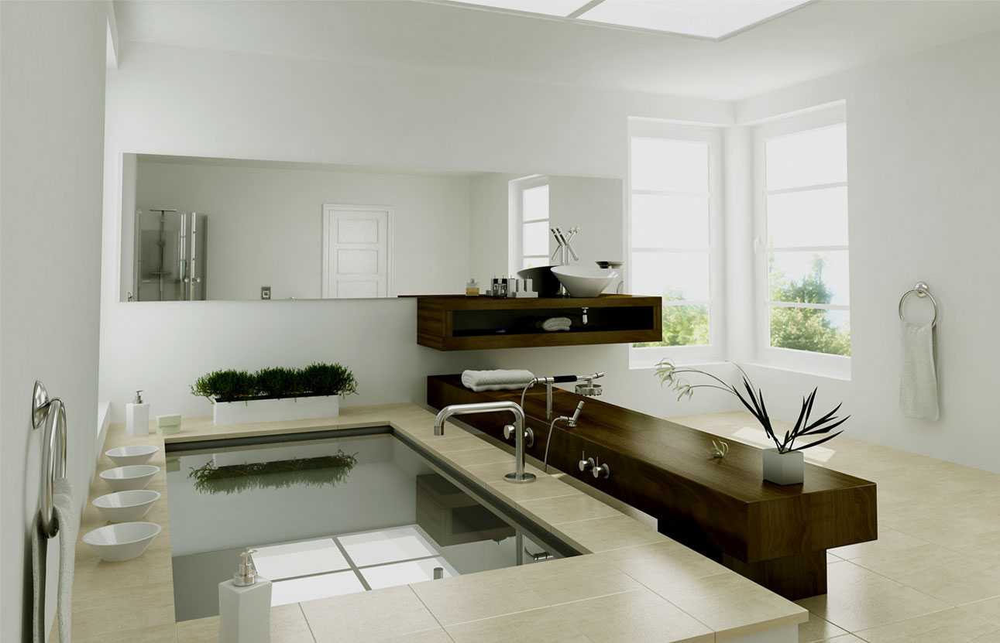
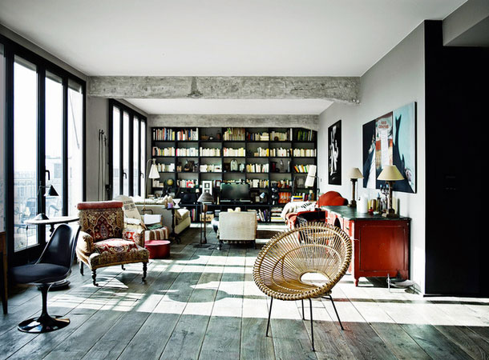
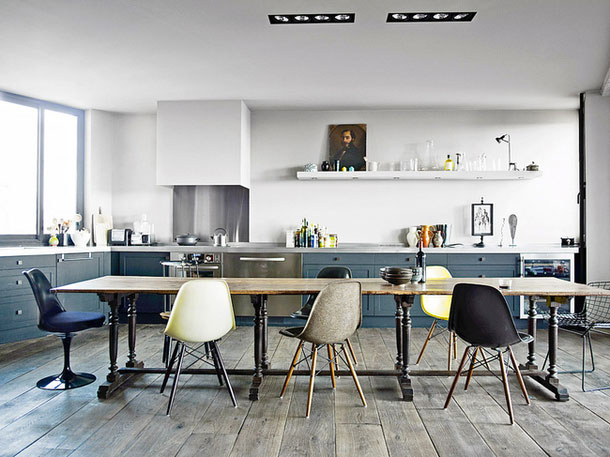
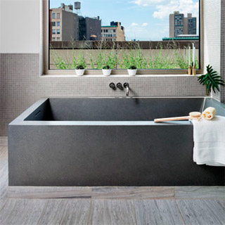
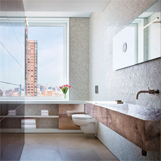
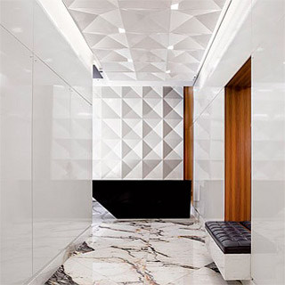
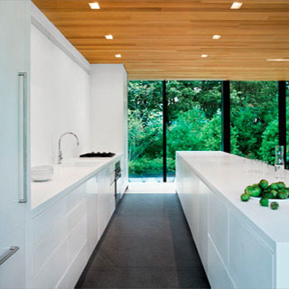
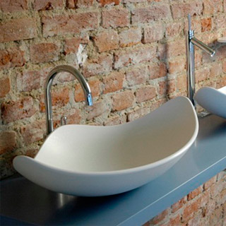

<!DOCTYPE html>
<html></html>
<head>
  <meta charset="utf-8">
  <title>Tristone</title>
  <link href="http://fonts.googleapis.com/css?family=Open+Sans:300italic,400italic,600italic,700italic,300,400,600,700&amp;subset=latin,cyrillic-ext,cyrillic" rel="stylesheet" type="text/css">
  <link href="css/main.css" rel="stylesheet">
</head>
<body>
  <header class="header">
    <a href="#"></a>
    <nav class="nav">
      <ul class="nav-list">
        <li class="nav-item"><a class="nav-link" href="#">О компании</a></li>
        <li class="nav-item"><a class="nav-link" href="#">Каталог цветов</a></li>
        <li class="nav-item"><a class="nav-link nav-active" href="#">Изделия из камня</a></li>
        <li class="nav-item"><a class="nav-link" href="#">Где заказать?</a></li>
        <li class="nav-item"><a class="nav-link" href="#">Техническая информация</a></li>
        <li class="nav-item"><a class="nav-link" href="#">Как связаться</a></li>
      </ul>
    </nav>
  </header>
  <div class="body">
    <aside class="left-col">
      <h2>Продукция из камня Tristone</h2>
      <ul class="left-menu">
        <li class="left-menu-item"><a class="left-menu-link" href="#">Столешницы</a></li>
        <li class="left-menu-item"><a class="left-menu-link" href="#">Кухонные столешницы</a></li>
        <li class="left-menu-item left-menu-active"><a class="left-menu-link" href="#">Стеновые покрытия</a></li>
        <li class="left-menu-item"><a class="left-menu-link" href="#">Фартуки</a></li>
        <li class="left-menu-item"><a class="left-menu-link" href="#">Подоконники</a></li>
        <li class="left-menu-item"><a class="left-menu-link" href="#">Пороги</a></li>
        <li class="left-menu-item"><a class="left-menu-link" href="#">Полки</a></li>
        <li class="left-menu-item"><a class="left-menu-link" href="#">Камины</a></li>
        <li class="left-menu-item"><a class="left-menu-link" href="#">Барные стойки, мебель</a></li>
        <li class="left-menu-item"><a class="left-menu-link" href="#">Подиум для душа</a></li>
        <li class="left-menu-item"><a class="left-menu-link" href="#">Подиум для ванной</a></li>
        <li class="left-menu-item"><a class="left-menu-link" href="#">Раковины</a></li>
        <li class="left-menu-item"><a class="left-menu-link" href="#">Другое</a></li>
      </ul>
      <p class="snippet">
        Материалы для поверхностей Tristone® можно встретить везде. Именно эти поверхности выбирают
        архитекторы и дизайнеры для применений в медицинской и пищевой отрасли, в гостиничном деле,
        в бизнес-центрах, школах и, конечно, частных домах — везде Tristone®.
      </p>
    </aside>
    <section class="page-content">
      <div class="work-nav">
        <a class="work-nav-prev" href="#" title="Предыдущая работа">Предыдущая работа</a>
        <a class="work-nav-next" href="#" title="Следующая работа">Следующая работа</a>
      </div>
      <h1>Прямоугольная ванна Lupi</h1>
      <div class="wrapper">
        <p>
          Современная эргономическая белая ванна. Дизайн Антонио Лупи (Antonio Lupi).
          <br>
          Салон интерьерных решений <a href="#">“Деко’рум”</a>, Екатеринбург.
        </p>
      </div>
      <div class="work-main-image">
        
      </div>
      <div class="wrapper">
        <div class="work-details">
          <div class="work-details-section">
            <div class="work-materials">
              В интерьере использованы материалы Tristone:
              <ul class="work-materials-list">
                <li class="work-materials-item">
                  <a class="work-materials-link" href="#">
                    
                    <span>T-001</span>
                    Chalcedony
                  </a>
                </li>
                <li class="work-materials-item">
                  <a class="work-materials-link" href="#">
                    
                      <span>T-002</span>
                      Tourmaline
                    </img>
                  </a>
                </li>
                <li class="work-materials-item">
                  <a class="work-materials-link" href="#">
                    
                      <span>T-003</span>
                      Ambiance
                    </img>
                  </a>
                </li>
              </ul>
            </div>
          </div>
          <div class="work-details-section">
            <h3>Салон интерьерных решений “Деко’ рум”</h3>
            <p>
              620014, Екатеринбург, ул. Малышева, 39/2, офис 294, (БЦ Палладиум)
              <br>
              +7 (343) 278-05-48
              <br>
              +7 (343) 249-58-48
              <br>
              <a href="mailto:info@decoroom.ru">info@decoroom.ru</a>
            </p>
            <p>
              <a class="js-contact-link" href="#">Написать представителям салона</a>
            </p>
          </div>
          <div class="work-details-section">
            <p>Фотографии предоставлены салоном интерьерных решений “Деко’ рум”, Екатеринбург</p>
            <p>
              <a href="#">Все работы салона</a>
            </p>
          </div>
        </div>
        <h2 class="like-h1">Подробнее о проекте</h2>
        <p>
          Современная эргономическая белая ванна. Дизайн Антонио Лупи (Antonio Lupi).
          <br>
          Семья из четырех человек, тележурналисты Сара и Луи и двое детей, несколько лет назад переехала сюда
          из классического османовского дома. Раньше в этой квартире в здании 1940-х годов в Третьем округе Парижа
          располагался 200-метровый офис. От прежних времен в доме сохранились мраморные холлы и лестницы
          с позолоченными перилами – ничего общего с интерьером самой квартиры.
        </p>
        <p>
          
        </p>
        <p>
          Хозяева делали ремонт сами, но пользовались подсказками архитектора Антонио Вирги. Вообще-то они
          мечтали жить среди краснокирпичных стен, но таковых в лофте оказалось всего две, поэтому в дело пошли
          белая и черная краски. Черного здесь вообще много – это один из любимых цветов хозяина.
        </p>
        <p>
          
        </p>
        <p>
          Во время ремонта новые хозяева больше всего потратились на дубовый пол – хотели, чтобы он выглядел аутентично.
          Кухню IKEA перекрасили сами матовой черной краской. Двери между спальней и ванной – точно такие же,
          как рамы на окнах.
        </p>
        <p class="tip">
          Фото предоставлено салоном интерьерных решений “Деко’ рум”, Екатеринбург
          <br>
          <a href="#">Все работы салона</a>
        </p>
      </div>
      <ul class="works-list">
        <li class="works-item">
          <a class="works-link" href="#"></a>
        </li>
        <li class="works-item">
          <a class="works-link" href="#"></a>
        </li>
        <li class="works-item">
          <a class="works-link" href="#"></a>
        </li>
        <li class="works-item">
          <a class="works-link" href="#"></a>
        </li>
        <li class="works-item">
          <a class="works-link" href="#"></a>
        </li>
        <li class="works-item">
          <a class="works-link" href="#"></a>
        </li>
        <li class="works-item">
          <a class="works-link" href="#"></a>
        </li>
        <li class="works-item">
          <a class="works-link" href="#"></a>
        </li>
        <li class="works-item">
          <a class="works-link" href="#"></a>
        </li>
        <li class="works-item">
          <a class="works-link" href="#"></a>
        </li>
        <li class="works-item">
          <a class="works-link" href="#"></a>
        </li>
        <li class="works-item">
          <a class="works-link" href="#"></a>
        </li>
        <li class="works-item">
          <a class="works-link" href="#"></a>
        </li>
        <li class="works-item">
          <a class="works-link" href="#"></a>
        </li>
        <li class="works-item">
          <a class="works-link" href="#"></a>
        </li>
      </ul>
      <div class="wrapper">
        <button class="base-button">Загрузить еще работы</button>
        <h2 class="like-h1">Где купить?</h2>
        <p>
          Если вы хотите заказать готовое изделие для дома, офиса или предприятие из искусственного камня Tristone®
          Baroque T003, мы рекомендуем вам наших партнёров в регионах, качество производимых изделий во многом
          зависит от качества нашего материала.
        </p>
        <p>
          Вы можете заказать любое изделие из камня Tristone® у 6 официальных дилеров  в России и СНГ,
          которые представлены в 68 городах и 1547 салонах.
        </p>
        <p>
          <a href="#">Список официальных дилеров по городам</a>
        </p>
      </div>
    </section>
  </div>
  <footer class="footer">
    <div class="footer-snippet">
      
      <p class="footer-snippet-text">
        Уникальный по своим характеристикам материал TRISTONE был создан на базе современных разработок и на
        высокотехнологичном оборудовании.
      </p>
    </div>
    <div class="wrapper">
      <ul class="footer-nav">
        <li class="footer-nav-item">
          <a class="footer-nav-link" href="#">О компании</a>
        </li>
        <li class="footer-nav-item">
          <a class="footer-nav-link" href="#">Каталог цветов</a>
        </li>
        <li class="footer-nav-item">
          <a class="footer-nav-link" href="#">Изделия из камня</a>
        </li>
        <li class="footer-nav-item">
          <a class="footer-nav-link" href="#">Где заказать?</a>
        </li>
        <li class="footer-nav-item">
          <a class="footer-nav-link footer-nav-active" href="#">Техническая информация</a>
        </li>
        <li class="footer-nav-item">
          <a class="footer-nav-link" href="#">Как связаться</a>
        </li>
      </ul>
      <p class="footer-contact">
        <strong>Главный офис</strong>
        <br>
        41-5 Moonpyong-Dong,
        <br>
        Daeduk-Gu, Daejeon, Korea
        <br>
        +82 42 930 3300
        <br>
        <a href="mailto:tristone@lion-cemtech.co.kr">tristone@lion-cemtech.co.kr</a>
      </p>
      <p class="footer-contact">
        <strong>Tristone Россия</strong>
        <br>
        Москва, Фрунзенская наб., 30,
        <br>
        офис 54
        <br>
        +7 (499) 242-80-51
        <br>
        <a href="mailto:info@tristone.ru">info@tristone.ru</a>
      </p>
      <p class="footer-copyright">
        © 2010-2013 © LION CHEMTECH, 2013 г. Все права защищены. Логотип Tristone™ и все названия продуктов,
        отмеченные символом ® или ™ являются зарегистрированными товарными знаками или товарными знаками
        компании Lion Chemtech или ее филиалов.
      </p>
      <p class="footer-developer">Design by Openlac</p>
    </div>
  </footer>
  <div class="overlay js-overlay"></div>
  <div class="work-popup">
    <a class="popup-close" href="#" title="Закрыть">Закрыть</a>
    <a class="work-popup-arrow work-popup-prev" href="#" title="Предыдущая работа">Предыдущая работа</a>
    <a class="work-popup-arrow work-popup-next" href="#" title="Следующая работа">Следующая работа</a>
  </div>
  <div class="popup js-contact-popup">
    <a class="popup-close js-popup-close" href="#">Закрыть</a>
    <h2>Написать представителям салона</h2>
    <hr>
    <form action="/" class="order-form">
      <fieldset>
        <div class="form-horizontal-field form-error">
          <input class="form-field" placeholder="Представьтесь" type="text">
          <div class="form-tip">Имя, фамилия</div>
          <div class="form-error-str">Необходимо заполнить</div>
        </div>
        <div class="form-horizontal-field">
          <input class="form-field" placeholder="Номер телефон" type="text">
          <div class="form-tip">Телефон в формате +7 965 5000 192</div>
        </div>
        <div class="form-horizontal-field">
          <input class="form-field" placeholder="Адрес электронной почты" type="text">
        </div>
        <div class="form-horizontal-field form-field-wide">
          <textarea class="form-field" placeholder="Текст письма" rows="5"></textarea>
        </div>
      </fieldset>
      <div class="form-buttons">
        <input class="submit" type="submit" value="Отправить письмо">
      </div>
    </form>
  </div>
  <script src="js/jquery-1.11.0.min.js"></script>
  <script src="js/popup.js"></script>
  <script src="js/work_popup.js"></script>
  <script>
    $(document).ready(function() {
      $('.js-contact-link').on('click', function() {
        return Popup.show('.js-contact-popup');
      });
      $('.js-contact-popup .js-popup-close').on('click', function() {
        return Popup.hide('.js-contact-popup');
      });
    });
  </script>
</body>
